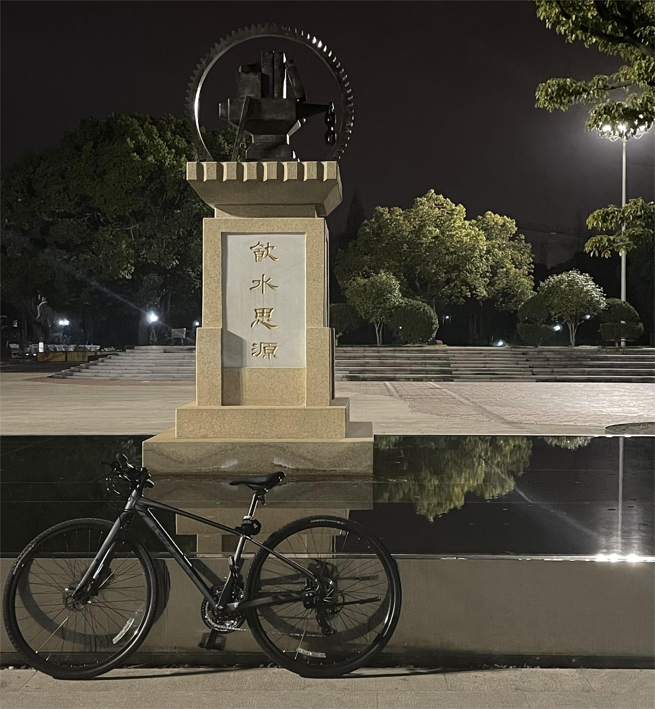
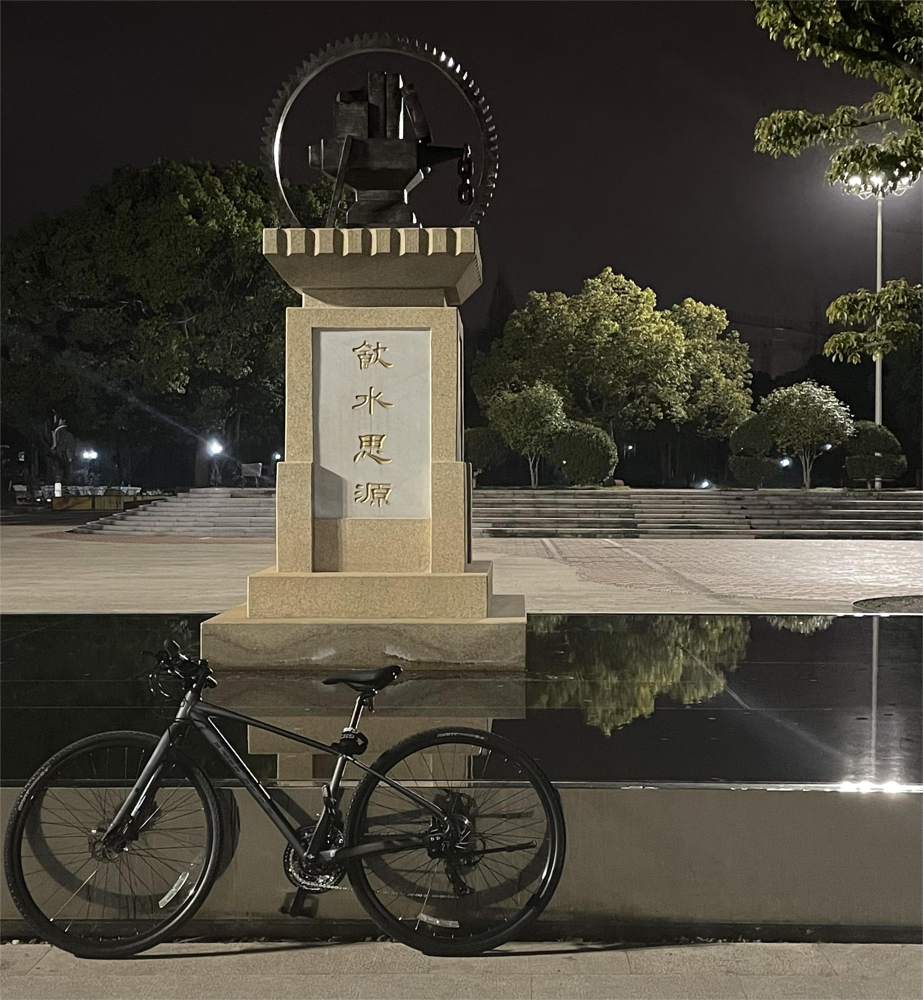

👋Hi there! I'm
Wang Yiting.
Welcome to my homepage.
I go by @wytili on the internet.
My journey in the tech world is driven by a relentless desire
to apply what I learn in real-world scenarios,
constantly seeking out new challenges to enhance my skills.
👈 You can click on the navigation bar on the left
to check out more about me.
I am looking for lab and internship opportunities that allow me to
learn, grow and contribute in a practical setting.
Education
| Sept.2021 - Jun.2025(Expected) B.S. in Information Security Shanghai Jiao Tong University(SJTU) |
Skills
Hobbies
 

🎧🎤🧳🏊🎸🚴💻🎮🏸etc.
Projects
| Information Retrieval System for Multimedia | A multimedia information retrieval system for text, image and audio with Django as framework and ElasticSearch as engine. As the person in charge of the Audio Module, I constructed a five-layer Perceptron model using the Keras library in TensorFlow for audio classification, achieving higher than 80% accuracy and making the second-highest contribution in the group. |
| JSS Reader | An RSS feeder designed for dedicated readers and SJTU students. As the person in charge of the front end, I used React and Ant Design frameworks for front-end development to implement the front-end of the RSS feeder and the interface between the front-end and back-end. |
| VersaGuard Firewall | A kernel module based packet filtering firewall on Linux. As the person in charge of the User Configuration Module (CLI), I developed rule management functionalities for the command-line interface, accessible via both command-line parameter mode and interactive mode. |
| Schedule Management Program | A multi-threaded account and schedule management program. As the person in charge of the Account Module, I implemented login, registration, and encryption function for account management via command line. |
| ACGAN-Mnist | A conditional generation model for handwritten digits based on Mnist dataset and ACGAN. As the team member, I participated in the writing of the code and organized the documentation. |
| Microcontroller-Based Vibration Navigation Insole | A voice controlled vibration machine combined with App for people with visual and hearing impairment. As the team leader, I used C++ and Arduino to enable voice recognition chip control of corresponding vibration motors, responding to various voice commands from navigation applications. |